Получение практических навыков настройки сетевых параметров в Linux с использованием утилит ip, nmcli и nmtui.
Для выполнения сетевых настроек были получены права суперпользователя с помощью команды su -.
-.
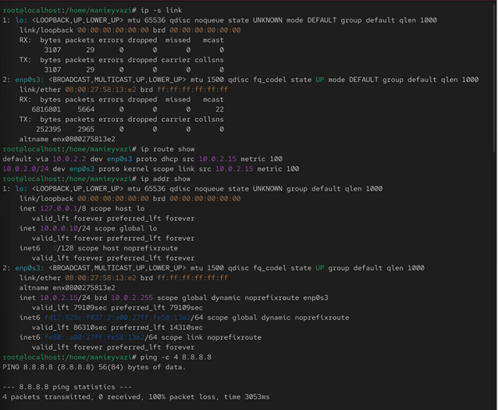
Рис. 1 — Интерфейсы и статистика пакетов
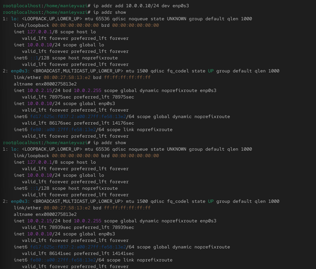
Рис. 2 — Таблица маршрутизации
-.
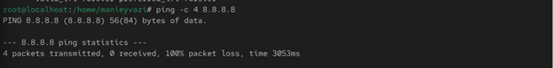
Рис. 3 — Проверка соединения с помощью ping
-.
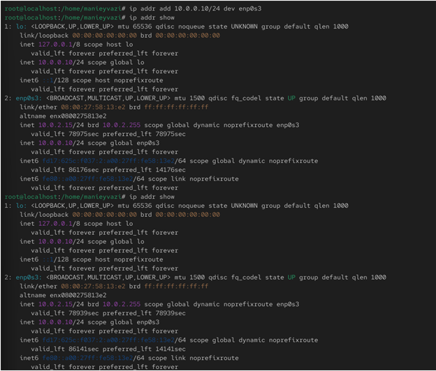
Рис. 4 — Добавление нового IP-адреса
-.
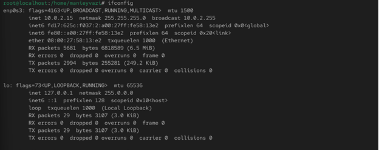
Рис. 5 — Вывод команды ifconfig
-.
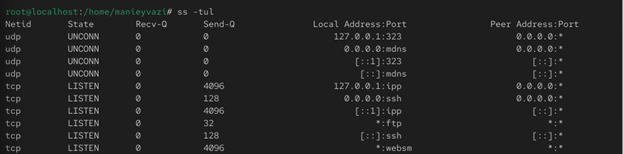
Рис. 6 — Список открытых портов TCP и UDP
-.
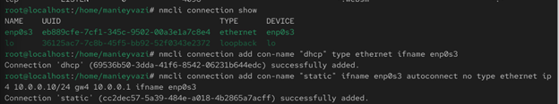
Рис. 7 — Список существующих подключений
Проверка работы системы.
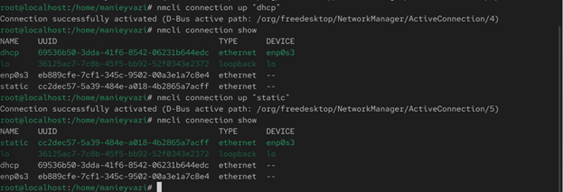
Рис. 8 — Активация статического соединения и проверка IP
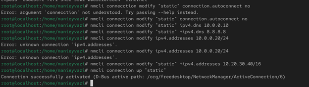
Рис. 9 — Изменение параметров и проверка IP
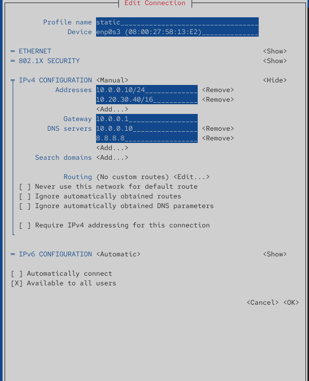
Рис. 10 — Настройки соединения static в nmtui
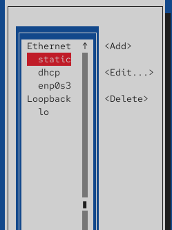
Рис. 11 — Просмотр настроек static в графическом интерфейсе
В ходе работы были освоены средства настройки сети в Linux:
Результатом стало полное понимание принципов работы сетевой конфигурации в ОС семейства RHEL.